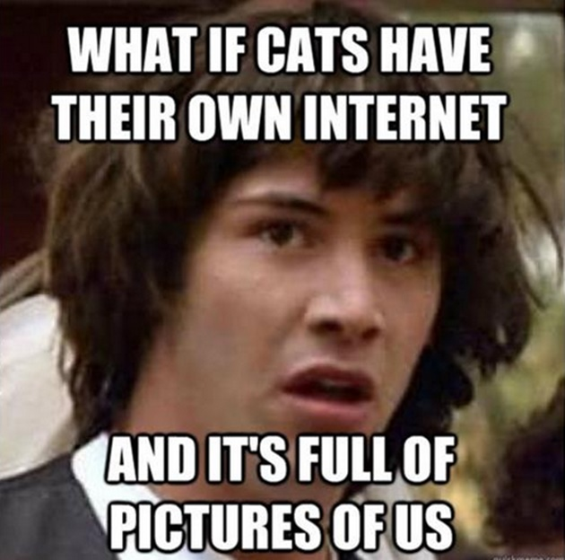

Low-res, high quality
Malin
Low quality content seems to be becoming increasingly popular in contemporary media. I’m talking about unpolished photos and videos and memes that intentionally make no sense.
This is by no means a new idea and I’m not saying anything revolutionary. Picasso strove to learn to unlearn complex techniques and remove restrictions from his practice leading to some of his best work. A lot of our generation is trying to disregard and dismantle societal expectations created by ourselves and our recent predecessors in regards to social media.
Very often I get an idea for a video that I want to make but I end up procrastinating it because I don’t have a good quality camera on me (I sold my camera to buy track-packing supplies lmao). Thinking like this leads to me abandoning so many ideas. Most of the time, I should just go ahead and use the camera on my phone. The content of the video is far more important than the resolution, and I can always go back and re film something in higher quality if it seems necessary for a specific video. Not starting a task because you don’t think it will be high enough quality becomes a perpetual excuse for so many tasks in all aspects of life.
Instagram is a good place to witness what I’m talking about. Typically Instagram is a relatively toxic place where people only post the best aspects of themselves and their lives. For a lot of people, Instagram is a platform for posting curated, edited, polished photos and videos. However, over the last year or so you can see more and more people posting photo dumps with random content from their camera rolls, with no editing, and seemingly more candid moments. Of course, there have always been people doing this, people that were always ‘too cool to care’ or whatever, but that’s besides the point. The point is that these posts that seem ‘too cool to care’ are now trending. I’m also not going to go into the obvious issue of people carefully curating photo dumps to seem candid, when they are not. For the sake of this writing, people that are actually too cool to care, and people that are pretending to be too cool to care can be considered the same. Regardless, it seems that lower quality, less polished, and less curated images are gaining in popularity.
Memes are another pretty clear example. Perhaps they just highlight the dysfunctional reality that Generation Z experiences.
Here’s an example of a meme that used to be funny:
Here’s an example of a more contemporary meme that is for some reason considered funny:
I guess that fact that this makes no sense and has no basis for comedy is what makes many enjoy this type of content. I see our love for lower fidelity content as a an acknowledgment of the absurdity and meaningless of so many things we as a society hold in a high regard. Seeing such content made me realise that my iPhone camera was enough.
I couldn’t care less about the Mona Lisa. I mean it genuinely when I say I’m more interested in the stickman you drew on a napkin that time in a restaurant when you were 9. Do you know what I mean? I think many do.
This attitude of not having to make everything seem perfect, and in fact striving for imperfection can be so beneficial to ones output as a creative. Perfection is a waste of time and energy. For example, it might take 100 units of work to get your task to 70% quality. But, often you end up using more than 100 units on top of that to try get that last 30%. Yeah, once in a while that may be worth it, but I think that most of the time the energy spent going for that last 30 would’ve been better spent getting a different project to 70% and stopping at 70%. Personally I’d rather have loads of projects that are good enough, than only a few that are close to perfect.
(09.12.21 07:31 Paris, France)
Sustainable Buying
Rocco
I’ve been riding fixed gear bikes for the past 6 years, (first 4 on and off, last 2 fully involved in the matter) and I’ve always found myself stagnated at the time of buying for a new pair to destroy whilst on the bike. Last year I went to visit a good friends family house in Marbella, and his dad (he really my friend too) surprised me in the morning one day offering me a pair of Prada shoes (the ones that look like if some low Chucks had a baby with the highest quality leather Dunks you’ve ever seen, see attachment) that didn’t fit him and he got tired of. Of course I took them, nothing screams nice leather like that Prada red tag on the heel does. So far, they’ve been my daily uniform shoes (at least for the nicer weather days) mainly because of how well they perform on the track bike! I’ve been through heaven and hell in these shoes, I even took them to trackpacking from Rome to Naples as my odd pair (other pair was cycling shoes, and of course the trusty ‘ole Birkies[s.o. Brooklyn Birkie Boys]) So yeah, I’d say these shoes were a great lesson on sustainable buying, buy good quality stuff that’ll last you longer than you’d expect it to, and you’ll be happy with the result.

(09.12.21 07:31 Paris, France)
Reflection on Inspiration
Malin
Recently I feel like I’ve been able to see art and design in a more objective sense. By that, I mean that I don't feel like I ever need to 'wait' for inspiration to strike, and instead, I'm always ready to brainstorm and work through ideas and problems. Somewhat forcing inspiration is an essential part of a sustainable, repeatable creative process. I love the idea of basing a project around a found object. Michele and I sourced an old, ornate, metal tissue box from a friend of ours that was originally from an antique store. It was full of all these other antiquated objects like watches and lighters and small pieces of jewellery. A box full of memories. Memory, therefore, became the main focus of a short project. We used the box we found, some electrical components, and some relatively simple code to create a memorisation game. Components included buttons, jumper cables, LED’s, a high-frequency buzzer, wire, cardboard and an Elegoo (an off-brand Arduino that works the same for a fraction of the cost). It’s comforting for me when art and design become inseparable. I feel like it’s essential to have a good understanding of complex technical mechanisms whilst giving yourself the freedom to take them apart, turn them inside out, destroy them, and rebuild them with not only a new form and function, but a new fundamental concept.
(16.12.21 21:28 New York City, US)
Collective Consciousness
Rocco
Not long ago I read an article about German-American psychologist Wolfgang Köhler, who conducted a study in 1929 where they asked different populations (Tamil speakers in India, Tenerifeans, young children, infants, and American university students) to decide which shape fit “takete” and which fit “baluba”. In all the cases, it was agreed that the shape with the rounded ends should be named “baluba”, and the shape with the sharp ends, “takete”. I think It’s interesting to think, how natural our collective (in)consciousness actually is, and how design and ergonomy are fully rooted in these human brain tendencies. I guess we’re really humans after all.

(28.11.21 07:25 Paris, France)